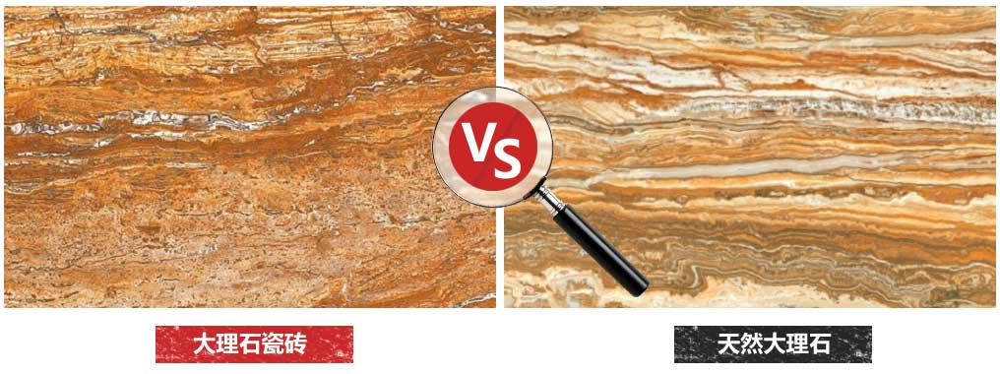

作为当下装修界宠儿，大理石瓷砖以其逼真的花纹完美
的性能风靡一时，也有很多滥竽充数的大理石瓷砖混迹
于此。作为一个有生活有品位有追求的消费者，当然需
要寻觅一片能与自己逼格相匹配的大理石瓷砖，以上的
点，你都get到了吗？
专题策划：刘凤桢 专题设计：陈继浩 技术支持：何静儿 出品：腾讯家居
“大理石瓷砖是具有天然大理石逼真纹理、色彩和质感的一类瓷砖产品。其在纹理、色彩、质感、手感以及视觉效果完全达到天然大理石的逼真效果，装饰效果甚至优于天然石材，大理石瓷砖凭借逼真的装饰效果和优越的实用性能赢得广大消费者的青睐，已发展成为瓷砖领域的主流产品之一。”通俗地说，大理石瓷砖就是表面做得非常像大理石，但本质是瓷砖的装饰材料。
来点直观的例子：来看看特地陶瓷生产的法国流金大理石瓷砖与“法国流金”天然大理石的对比。
只看平面图，小伙伴们是不是依然傻傻得感觉很难分清？分不清就对了，因为在如今高科技的生产技术下，大理石瓷砖已经在表面纹理上面无限地接近天然大理石，所以分不清不怪你。
那么，好好的瓷砖为什么非要伪装成大理石的样子？喜欢大理石就去买买买不就行了吗？尼玛真土豪，妈妈没有告诉你，天然大理石要比大理石瓷砖贵上好多好多么？
所以，大理石瓷砖之所以能风靡全国装修界，就是因为大理石瓷砖既能还原天然大理石的逼真效果，而且价格相对经济实惠，并且还拥有瓷砖才有的优越性能！
冲击后容易碎裂
天然大理石
冲击后不易碎裂
大理石瓷砖
折抗强度低
天然大理石
折抗强度高
大理石瓷砖
容易磨花磨损
天然大理石
耐磨性强
大理石瓷砖
抗污性弱
天然大理石
抗污性强
大理石瓷砖
吸水率高
天然大理石
吸水率低
大理石瓷砖
瑕疵不可控
天然大理石
几乎无瑕疵
大理石瓷砖
粗狂式开采
天然大理石
标准化生产
大理石瓷砖
好处二：能模仿上千种天然大理石
作为一个模仿者，大理石瓷砖能模仿出多少品类的天然大理石呢？
据不完全统计，目前大理石品种超千款，单是我国天然大理石有400多个品种，而其中珍稀或濒临绝迹，而无论这种天然大理石多么珍稀或是否绝迹，大理石瓷砖都能做到。
而目国内一线瓷砖品牌都能逼真地还原各种天然大理石。举个栗子，特地陶瓷家的大理石瓷砖就可以完美做出——鱼肚白、意大利灰、莎安娜、罗马洞石、金线米黄、蒂诺米黄、侏罗纪米黄、彩虹木纹、凯撒金、法国流金、景泰蓝、世纪米黄、水晶浅啡、香槟金、劳伦特黑等等模仿大理石胜似大理石的花纹，你看出来了吗？
想要成为一片高逼格大理石瓷砖，首先你颜值得高啊——外貌上必须长得非常像天然大理石。高逼格的大理石瓷砖，其花色和纹理必须自然逼真，像石材一样独一无二，触感上还要有天然大理石的凹凸质感，拒绝撞脸，无底线地像天然大理石。
但实际上，要做到跟天然大理石一样逼真，对企业的生产要求非常高。比如特地大理石瓷砖，其纹理取材原生态大理石，运用高清石材复原技术，采用多重套色喷墨打印、丝网印刷凌空跳印印刷技术，完美还原石材天然裂纹的真实触感，因此特地大理石层次更清晰、线条更细腻、更加透亮，颜色丰富、版面多变，图案精细而且手感温润，仿石材，胜似石材。反观一些花纹清晰度较差的大理石瓷砖，近距离看的时候，会发现表面有很多网格，大大降低瓷砖整体的自然美感。所以选购的时候认真瞧瞧，看大理石瓷砖逼真度能否做到疑幻似真。
而作为一片瓷砖，在瓷砖的规格、质地、硬度、吸水率、防滑性、耐磨度等内涵方面也有高规格的要求。特地大理石瓷砖的砖坯烧制的时间比普通产品多半个小时以上，且温度更高，制品在窑炉内能完全瓷化，结晶层更加的密实，因此特地大理石具有超高硬度和高强度。在鉴别劣质砖坯时，小编传授两绝招可辨别这大理石瓷砖内涵是否同样高逼格——
1用硬物轻敲瓷砖，如果有敲金属的声音，说明该砖瓷化程度好，玻化强度高，如果声音沉闷则说明砖没有烧透，质地不够好。
2用手掂量瓷砖，同样规格厚度的大理石瓷砖越沉说明其密度越大，硬度也就越高。
满足了以上两个条件，那也只能是合格的大理石瓷砖。正如尊贵的公举通常都有尊贵的血统一样，一片高逼格的大理石瓷砖还要出身名门，拥有知名品牌多年来稳定的生产技术，超前的研发实力以及无与伦比的售前售后服务。酱，才能算是一片高逼格的大理石瓷砖。
那么到底目前市面上有哪些大理石瓷砖的贵族品牌呢？比如说，特地大理石瓷砖，还有简一大理石瓷砖，再比如…
大理石瓷砖的逼格，你都get到了么？
作为当下装修界宠儿，大理石瓷砖以其逼真的花纹完美
的性能风靡一时，也有很多滥竽充数的大理石瓷砖混迹
于此。作为一个有生活有品位有追求的消费者，当然需
要寻觅一片能与自己逼格相匹配的大理石瓷砖，以上的
点，你都get到了吗？